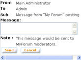

|
Discussion Forum
Discussion Forum allows interactions between users. Discussion threads are grouped in categories, boards, and topics. Administrators and moderators can set threads to be moderated. It is also possible for administrators and moderators to create private discussion threads.
a. Click on “Discussion Forum”
link from the top panel of the screen.
b. The “Discussion Forum” main
page is divided into 3 sections:
- Bookmarks (Special discussion,
bookmarked threads, and latest postings)
- Discussion Hierarchy (Categories, Boards, Topics)
1. Display Discussion Threads
a. Click on the topic name
b. The “Thread List” page will show list of threads under the topic.
2. Create New Discussion Thread
a. On the “Thread List” page, click on “New Thread” button to open the “Create Thread” pop up window
b. On the “Create Thread” page, enter the title and the message of the thread. User can preview the message before submitting by clicking on “Preview” button. Click on “Submit” to create the thread. Depends on moderation setting, if moderation is required, the request for thread creation will be sent to the moderators to be approved. Otherwise, the thread will be created and displayed in the “Thread List” page.
3. Display Postings
On the “Thread List” page, click on the thread title to show the “Post List” page showing list of postings under that thread.
4. Post Reply
a. On the “Post List” page, click on “Post Reply” button to open the “Post Message” pop up window
b. Enter the message to be posted. To preview the message before submitted, click on the “Preview” button. Click on “Submit” button to submit. If the thread is moderated, the posting will be sent to moderators for approval. Otherwise, the posting will be created and displayed in the “Post List” page.
5. Quote Posting
Use the quote function to post a reply by referring to another posting. The quoted posting will be included in the reply message.
a. On the “Post List” page, click on the “Quote” button of the posting to be quoted.
b. The “Post Message” pop up window will be opened. The message will already include the quoted posting.
c. Enter the message to be posted. To preview the message before submitted, click on the “Preview” button. Click on “Submit” button to submit. If the thread is moderated, the posting will be sent to moderators for approval. Otherwise, the posting will be created and displayed in the “Post List” page.
6. Send Personal Message
If the setting for Personal Message (PM) enabled by the Administrator, the “PM” button will be displayed beside the nickname of the poster in “Post List” page. PM is user to send a personal message to another user. The PM will be sent to the recipient's email account.
a. On the “Post List” page, click on the “PM” button for a user to open a pop up window.
b. Enter the message. Click on “Send” button to send the PM.
7. Alert Admin
Alert Admin is used to alert administrators regarding a posting in case a posting is inappropriate or for any other reason. The Alert Admin message will be sent to the email account of the administrators.
a. On the “Post List” page, click on “Admin” button to open a pop-up window.

b. Enter the message. Click on “Send” button to send the message.
8. Email Friend
Use the Email Friend function to alert and invite friends to view the discussion thread.
a. On the “Post List” page, click on “Email Friend” button to open the “Alert Friend” pop up window
b. Enter the recipient email address. The email address must be MOE's email address. Click on “Send” button to send the email.
9. Sticky Discussion Thread
The Sticky Thread function is used to stick the thread to the top of the thread list in the “Thread List” page.
a. On the “Thread List” page, click on the thread title to open the “Post List” page.
b. Click on the “Sticky”
button. The thread will be set to be sticky
To remove sticky thread setting:
a. Go to the “User Profile” page by clicking on the “User Profile” icon on the top panel of the screen.
b. On the “Sticky Threads” section, select the sticky thread to be removed. Click on “Remove” button.
10. Track Discussion Thread
The Track Thread function is used to keep track of updates in the thread. A notification email will be sent if there is a new posting on the thread.
a. On the “Thread List” page, click on the thread title to open the “Post List” page.
b. Click on the “Bookmark”
button. The thread will be bookmarked
To remove tracked thread setting:
a. Go to the “User Profile” page by clicking on the “User Profile” icon on the top panel of the screen.
b. On the “Bookmarks for alert” section, select the tracked thread to be removed. Click on “Remove” button.
|